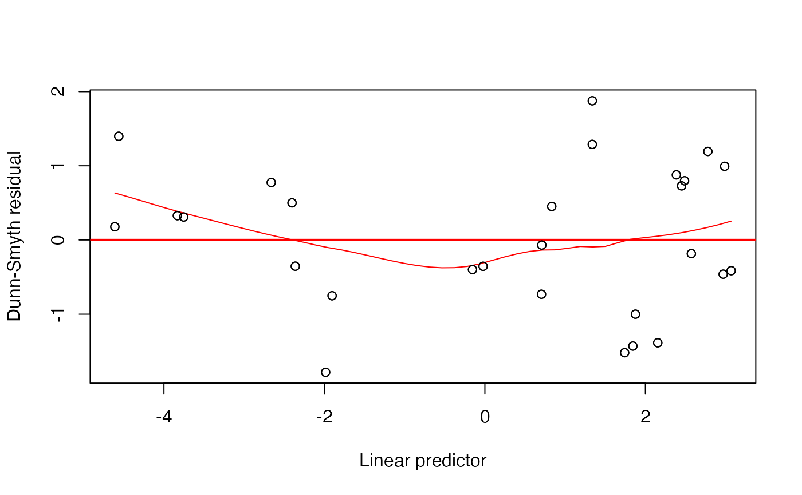

Fits a path of Generalised Linear Models with LASSO (or L1) penalties, and finds the model that minimises BIC.
glm1path.RdFits a sequence (path) of generalised linear models with LASSO penalties, using an iteratively reweighted local linearisation approach. The whole path of models is returned, as well as the one that minimises BIC. Can handle negative binomial family, even with overdispersion parameter unknown, as well as other GLM families.
Arguments
- y
A vector of values for the response variable.
- X
A design matrix of p explanatory variables.
- family
The family of the response variable, see
family. Negative binomial with unknown overdispersion can be specified as "negative.binomial", and is the default.- lambdas
An optional vector of LASSO penalty parameters, specifying the path along which models will be fitted. This penalty is applied to parameters as specified in
penalty. By default, a geometric sequence of values will be constructed withn.lambdavalues, starting from the intercept model and reducing lambda to 1.e-6 of its original value. Any vector that is provided will be sorted in decreasing order, so that the smallest model (biggest penalty) is fitted first.- penalty
A vector to be multiplied by each lambda to make the penalty for each fitted model. The main purpose here is to allow penalties to be applied to some parameters but not others, but it could also be used to change the size of the penalty for some terms as compared to others (e.g. to fit an adaptive LASSO). Must have the same length as the dimension of the model,
dim(X)[2].- df.max
The maximum number of terms that is permitted in the fitted model. Once this threshhold is reached no further fits are attempted. The default break-point is the number of non-zero values in the response vector.
- n.lambda
The number of models to fit along the path (if not previously specified via
lambdas).- lam.max
The maximum value of the LASSO penalty to use along the path of fitted values (if not previously specified via
lambdas).- lam.min
The minimum value of the LASSO penalty to use along the path of fitted values (if not previously specified via
lambdas).- k
In BIC calculation, this is the value of the penalty per parameter in the fitted model. The default value,
log(length(y)), gives BIC (known to be consistent, for adaptive LASSO), changing it to2would give AIC (which is not so great in terms of properties).- b.init
An initial value for beta for the first model along the fitted path. Default is to fit an intercept model.
- phi.init
For negative binomial models: An initial value for the overdispersion parameter for the first model along the fitted path. Default is zero (Poisson fit).
- phi.iter
Number of iterations estimating the negative binomial overdispersion parameter (if applicable) before returning to slope estimation. Default is one step, i.e. iterating between one-step estimates of beta and phi.
- ...
Arguments passed to
glm1.
Details
This function fits a series of LASSO-penalised generalised linear models, with different values for the LASSO penalty. Largely inspired by the glmnet package. This results in a path of fitted models, from small ones (with big LASSO penalties) to larger ones (with smaller penalties). Each individual model is fitted using the glm1 function, which uses a local linearisation approach as in Osborne et al (2000), nested inside iteratively reweighted (penalised) least squares, and using results from the previous fit as initial estimates. Look it's not the fastest thing going around, try glmnet if you want something faster (and possibly rougher as an approximation). The main advantage of the glm1path function is that it has been written to accept any glm family argument (although not yet tested beyond discrete data!), and also the negative binomial distribution, which is especially useful for modelling overdispersed counts.
For negative binomial with unknown overdispersion use "negative.binomial", or if overdispersion is to be specified, use negative.binomial(theta) as in the MASS package. Note that the output refers to phi=1/theta, i.e. the overdispersion is parameterised in output such that the variance is mu+phi*mu^2. Hence values of phi close to zero suggest little overdispersion, values over one suggest a lot.
You can use the residuals and plot functions on glm1path objects in order to compute Dunn-Smyth residuals and a plots of these residuals against linear predictors, as for manyglm.
Value
An object of class glm1path with the following components:
- coefficients
Vector of model coefficients for the best-fitting model (as judged by BIC)
- lambda
The value of the LASOS penalty parameter, lambda, for the best-fitting model (as judged by BIC)
- glm1.best
The glm1 fit for the best-fitting model (as judged by BIC). For what this contains see
glm1.- all.coefficients
A matrix where each column represents the model coefficients for a fit along the path specified by
lambdas.- lambdas
A vector specifying the path of values for the LASSO penalty, arranged from largest (strongest penalty, smallest fitted model) to smallest (giving the largest fitted model).
- logL
A vector of log-likelihood values for each model along the path.
- df
A vector giving the number of non-zero parameter estimates (a crude measure of degrees of freedom) for each model along the path.
- bics
A vector of BIC values for each model along the path. Calculated using a penalty on model complexity as specified by input argument
k.- counter
A vector counting how many iterations until convergence, for each model along the path.
- check
A vector of logical values specifying whether or not Karush-Kuhn-Tucker conditions are satisfied at the solution.
- phis
For negative binomial regression - a vector of overdispersion parameters, for each model along the path.
- y
The vector of values for the response variable specified as an input argument.
- X
The design matrix of p explanatory variables specified as an input argument.
- penalty
The vector to be multiplied by each lambda to make the penalty for each fitted model.
- family
The family argument specified as input.
References
Osborne, M.R., Presnell, B. and Turlach, B.A. (2000) On the LASSO and its dual. Journal of Computational and Graphical Statistics, 9, 319-337.
Examples
data(spider)
Alopacce <- spider$abund[,1]
X <- model.matrix(~.,data=spider$x) # to get design matrix with intercept term
# fit a LASSO-penalised negative binomial regression:
ft = glm1path(Alopacce,X)
# have a look at the BICS for all models:
plot(ft$bics~ft$lambdas, log="x")
#the action seems to be at lambda above 0.1, re-do with a minimum lambda at 0.1 and more lambdas:
ft2 = glm1path(Alopacce,X,lam.min=0.1,n.lambda=100)
plot(ft2$bics~ft2$lambdas, log="x")
# return the slope estimates for the best-fitting model:
coef(ft2)
#> (Intercept) soil.dry bare.sand fallen.leaves moss
#> -1.9991080 -0.6494688 0.0000000 -0.2470569 0.1583804
#> herb.layer reflection
#> 0.6234800 0.7753254
# look at a residual plot:
plot(ft2)
